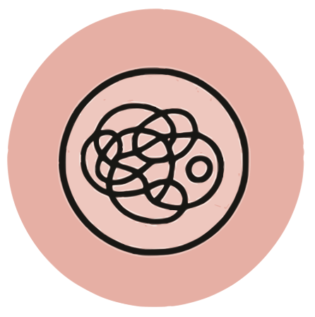
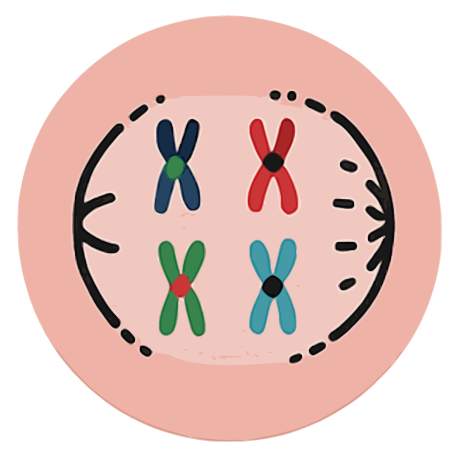
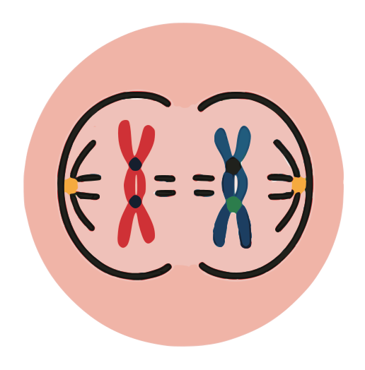
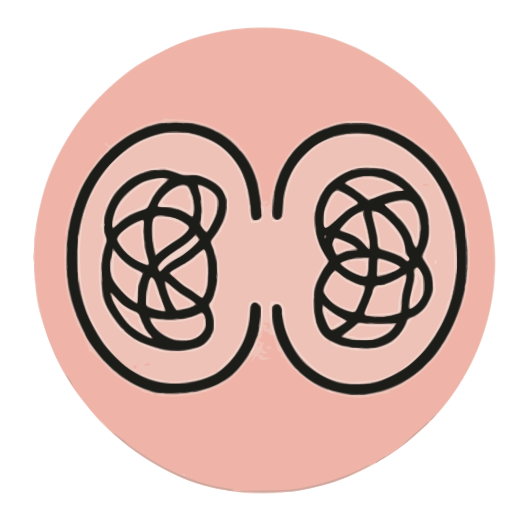
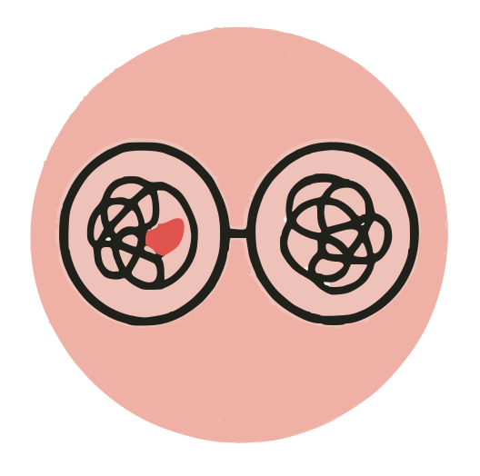

interfase

-
La interfase es la fase del ciclo celular en la que la célula no se
divide activamente, pero se encuentra en constante actividad.
-
En este período, la célula crece, sintetiza proteínas y organelos,
duplica su ADN y realiza los controles necesarios antes de
dividirse.
-
Este proceso es fundamental, ya que permite que la división celular
ocurra de manera correcta.
-
Si la interfase no se realiza de forma adecuada, pueden ocurrir
errores en la replicación del ADN, lo que puede llevar a mutaciones
o enfermedades.
profase

-
La cromatina (ADN desenrollado) se condensa y forma los cromosomas
visibles.
-
Cada cromosoma está compuesto por dos cromátides hermanas unidas por
un centrómero.
- La membrana nuclear comienza a desintegrarse.
-
Se forman los husos mitóticos, estructuras encargadas de mover los
cromosomas.
anafase

- Las cromátides hermanas se separan y son arrastradas hacia polos opuestos de la célula.
- Esto es posible gracias al acortamiento de las fibras del huso mitótico.
- Cada polo recibe el mismo número de cromosomas.
telofase

- Se forman dos nuevos núcleos alrededor de los cromosomas en cada extremo de la célula.
- Los cromosomas se desenrollan y vuelven a convertirse en cromatina.
- La membrana nuclear se reorganiza.
citocinesis

- En células animales: se forma un anillo contráctil que divide la célula en dos.
- En células vegetales: se forma una placa celular, que dará origen a la nueva pared celular.
- Como resultado, se obtienen dos células hijas idénticas a la célula madre.